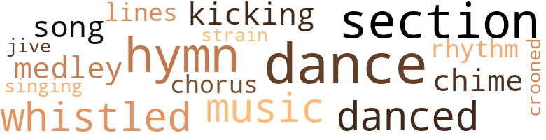
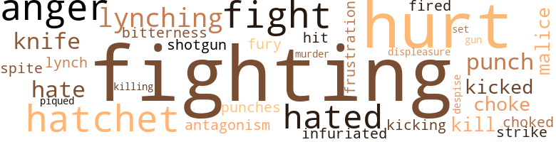

Nothing But a Man, by Thompson, Jim (1970)
27 music-related terms matched in this text.
Most frequent terms in this topic: dance (4); section (3); hymn (3); music (2); danced (2)
chime.n.01
Definition: a percussion instrument consisting of a set of tuned bells that are struck with a hammer; used as an orchestral instrument
| word | sentence |
|---|---|
| chime | There was a single chime on the church bell . |
chorus.n.01
Definition: any utterance produced simultaneously by a group
| word | sentence |
|---|---|
| chorus | As her untrained voice rose clear and moving above the chorus from the choir , Duff entered the church and sat down at Josie 's side . |
croon.v.01
Definition: sing softly
| word | sentence |
|---|---|
| crooned | she crooned silently . |
dance.n.01
Definition: an artistic form of nonverbal communication
| word | sentence |
|---|---|
| dance | " Let 's dance , huh ? " |
| dance | The dance number came to an end , and they returned to the table . |
| dance | The angry yelling of Barney Hall 's wife , Bessie , brought the dance to a halt . |
| dance | When the dance ended , Duff guided Josie back to their booth , fanning a hand before him to find his way through the haze . |
dance.v.03
Definition: skip, leap, or move up and down or sideways
| word | sentence |
|---|---|
| danced | She danced well , but Duff had no heart for it . |
| danced | They danced up and down the laun - dry lines , picking off the washed clothes in time to their movements . |
hymn.n.01
Definition: a song of praise (to God or to a saint or to a nation)
| word | sentence |
|---|---|
| hymn | Black people , raising rich voices in song , a hymn to God for the many blessings bestowed upon them . |
| hymn | He did n't exactly join in the hymn , although he appeared to - after a fashion . |
| hymn | The hymn came to an end , and the Reverend Daw - son rose in the pulpit . |
kick.v.04
Definition: kick a leg up
| word | sentence |
|---|---|
| kicking | T can see why , " he grinned , kicking a rickety chair . |
medley.n.01
Definition: a musical composition consisting of a series of songs or other musical pieces from various sources
| word | sentence |
|---|---|
| medley | A medley of sounds drifted to them in the darkness . |
music.n.01
Definition: an artistic form of auditory communication incorporating instrumental or vocal tones in a structured and continuous manner
| word | sentence |
|---|---|
| music | " Hell . . . might as well face the music . " |
| music | The music was kind of a soft rock , sort of like a jackhammer on sandstone . |
rhythm.n.04
Definition: the arrangement of spoken words alternating stressed and unstressed elements
| word | sentence |
|---|---|
| rhythm | Shuffling in and out of her reach , his feet took on more and more of the rhythm of the radio 's cha-cha . |
section.n.01
Definition: a self-contained part of a larger composition (written or musical)
| word | sentence |
|---|---|
| section | Out of all of the houses in the town 's Negro section , this was among the very best . |
| section | The Negro section could probably have been reached an - other away , but Duff chose a route which led through the wealthiest part of town . |
| section | The car jolted through a run-down , rutted , dirt street in a particularly bad neighborhood of the Negro section . |
singing.n.01
Definition: the act of singing vocal music
| word | sentence |
|---|---|
| singing | The singing came to an end . |
song.n.01
Definition: a short musical composition with words
| word | sentence |
|---|---|
| song | Black people , raising rich voices in song , a hymn to God for the many blessings bestowed upon them . |
swing.n.05
Definition: a style of jazz played by big bands popular in the 1930s; flowing rhythms but less complex than later styles of jazz
| word | sentence |
|---|---|
| jive | " I just could n't make it , cooped up and takin ' all that jive . |
tune.n.01
Definition: a succession of notes forming a distinctive sequence
| word | sentence |
|---|---|
| lines | They danced up and down the laun - dry lines , picking off the washed clothes in time to their movements . |
| strain | " Well . . . " the minister 's voice was hoarse with strain " I know it 's how you young folks think . |
whistle.v.01
Definition: make whistling sounds
| word | sentence |
|---|---|
| whistled | Josie flung herself backwards as the blade whistled past her and watched with frightened eyes as the chair was smashed to bits . |
| whistled | From somewhere in the distance , a train whistled a high-ball , its echoes drifting across the coun - tryside with aching loneliness . |
73 violence-related terms matched in this text.
Most frequent terms in this topic: fighting (7); hatchet (5); anger (5); hurt (5); hated (4)
anger.n.01
Definition: a strong emotion; a feeling that is oriented toward some real or supposed grievance
| word | sentence |
|---|---|
| anger | Duff stood silent , eyes flickering with anger as he stared at the other men - black men , like himself . |
| anger | At last desisting , not because his anger had been greatly relieved , but for practical reasons . |
| anger | With the rain-cooled air pouring through the car win - dow , his anger began to die , slowly gave way to another emotion - self-reproach . |
| anger | Josie 's defensively-offensive anger flared higher . |
| anger | It rose higher as their talks continued , each remark of Duff 's - remarks which seemed simplistic to the point of foolishness to Dawson - fanning the anger which always smoldered within him . |
contemn.v.01
Definition: look down on with disdain
| word | sentence |
|---|---|
| despise | They 've taught you to despise and distrust each other , because it meant money in THEIR pockets , and old habits die hard . |
displeasure.n.01
Definition: the feeling of being displeased or annoyed or dissatisfied with someone or something
| word | sentence |
|---|---|
| displeasure | He had ways of showing his displeasure , like sluffing-off or sneaking drinks , and if that did n't snap 'em out of it - and it never did - well , Will still had an ace up his sleeve . |
fight.n.02
Definition: the act of fighting; any contest or struggle
| word | sentence |
|---|---|
| fighting | " I think he must have a pretty strong hunch by now that getting fired from every job he 's held here and losing his temper is n't a very effective way of fighting . |
| fighting | Will 's way of fighting was no good . |
fight.n.05
Definition: a boxing or wrestling match
| word | sentence |
|---|---|
| fights | Yes , of course , you 're going to have to work for it ; the help you need to win fights instead of losing them . |
fight.v.02
Definition: fight against or resist strongly
| word | sentence |
|---|---|
| fight | I 've been trying to fight against it - all my instincts and experience inclined me in the opposite direction . |
| fighting | Dawson took a pace or two around the room , fighting to get his feelings under control , to keep those feelings from creeping into his voice . |
| fighting | He re - mained in it , fighting off the wooziness in his brain . |
| fight | Were going to fight ! " |
| fighting | " Since when did you believe in fighting ? " |
| fighting | Before we do any fighting at all , we have to know just who our enemy is . |
| fight | A man had to fight back , did n't he ? |
| fight | Know what I got to fight an how to do it ! |
| fighting | Duff and Frankie remained in their fighting stance a moment longer . |
frustration.n.03
Definition: a feeling of annoyance at being hindered or criticized
| word | sentence |
|---|---|
| frustration | Then , gradually , there was a subtle change in his expression , as frustration again gnawed him . |
fury.n.01
Definition: a feeling of intense anger
| word | sentence |
|---|---|
| fury | For in his fury and confusion , he saw every - thing as through a haze , and Bud Ellis no longer existed for him . |
gag.v.06
Definition: cause to retch or choke
| word | sentence |
|---|---|
| choked | " Well " - she choked and sputtered as he shoved a forkful of pie into her mouth . |
| choke | He 'd choke before he crawled to any white man . |
| choke | And it stood to reason that anything that stank bad enough to choke a horse-fly would n't smell too good to a girl . |
gun.n.01
Definition: a weapon that discharges a missile at high velocity (especially from a metal tube or barrel)
| word | sentence |
|---|---|
| gun | And damned if that damned Frankie had n't turned the Flit gun on him . |
hate.n.01
Definition: the emotion of intense dislike; a feeling of dislike so strong that it demands action
| word | sentence |
|---|---|
| hate | I get so full of hate , it starts eatin ' me up inside ! " |
hate.v.01
Definition: dislike intensely; feel antipathy or aversion towards
| word | sentence |
|---|---|
| hated | He hated arguments , par - ticularly at mealtimes . |
| hate | " Just that I hate empty rooms , " she said , defensively elaborate . |
| hated | And how was he to know that black men hated to be called that ? |
| hated | All he knew about was the colored bars like this one , and he knew he hated 'em . |
| hated | And he wondered , without really wondering , why he spent so much time in places that he hated . |
| hate | Mmm , Duff sighed , mmmph-mmml Do n't mind seein that evenin ' sun go down , just hate that mornin sun comin ' up . |
hostility.n.02
Definition: a state of deep-seated ill-will
| word | sentence |
|---|---|
| antagonism | " There 's a great deal in what you say , Max , " he averred solemnly , " But is n't such a move apt to arouse antagonism ? " |
hurt.v.04
Definition: cause damage or affect negatively
| word | sentence |
|---|---|
| hurt | " I did n't mean to hurt your feelings . " |
infuriate.v.01
Definition: make furious
| word | sentence |
|---|---|
| infuriated | Duff was infuriated . |
injury.n.01
Definition: any physical damage to the body caused by violence or accident or fracture etc.
| word | sentence |
|---|---|
| hurt | Duff looked down at the floor , masking the hurt that was always with him . |
| hurt | Doris looked confused , hurt : a child who had been slapped . |
kick.v.04
Definition: kick a leg up
| word | sentence |
|---|---|
| kicking | T can see why , " he grinned , kicking a rickety chair . |
kick_back.v.02
Definition: spring back, as from a forceful thrust
| word | sentence |
|---|---|
| kicked | And he kicked the chair down the steps . |
| kicked | Duff nodded , said he 'd kicked around up north for a couple of months after being discharged from the army . |
kill.v.10
Definition: cause the death of, without intention
| word | sentence |
|---|---|
| kill | If one of 'em ever touched you , I 'd kill him ! " |
| kill | If I do n't get out of here right now , I 'll kill the next one opens his mouth to me ! " |
| killing | No white man is going to be punished for killing a Negro . |
knife.n.02
Definition: a weapon with a handle and blade with a sharp point
| word | sentence |
|---|---|
| knife | " Maybe they do n't castrate you with a knife but they got other ways . |
| knife | Duff closed his concealed knife with a metallic click . |
| knife | Duff jumped up , open knife in one hand , sharpened whittling stick in the other . |
lynch.v.01
Definition: kill without legal sanction
| word | sentence |
|---|---|
| lynch | They 'd lynch you . " |
lynching.n.01
Definition: putting a person to death by mob action without due process of law
| word | sentence |
|---|---|
| lynching | Eight years ago they had a lynching here . |
| lynching | Anytime you need anything , just let us know ... " The men , the representative of those men , had been as angry over the lynching as he . |
| lynchings | Even more so , if that was possible , for there was a big industrial investment in the town , and lynchings were notoriously bad for business . |
| lynching | This lynching probably brings complete justice ten years closer to you than you would ordinarily have gotten it . " |
malice.n.01
Definition: feeling a need to see others suffer
| word | sentence |
|---|---|
| spite | " But I hope you 're not doing this to spite us . " |
| malice | there was no malice in the supervisor 's voice - if anything , puzzlement , regret . |
| malice | She gave her nose an angry scrub with her handkerchief , then looked at her father with something akin to malice . |
murder.n.01
Definition: unlawful premeditated killing of a human being by a human being
| word | sentence |
|---|---|
| murder | I was a witness to a murder , and I can identify the murderers . |
murder.v.01
Definition: kill intentionally and with premeditation
| word | sentence |
|---|---|
| hit | " Man , " Duff exclaimed , " we sure hit the jackpot fast around here . " |
open_fire.v.01
Definition: start firing a weapon
| word | sentence |
|---|---|
| fired | " I think he must have a pretty strong hunch by now that getting fired from every job he 's held here and losing his temper is n't a very effective way of fighting . |
pain.v.02
Definition: cause emotional anguish or make miserable
| word | sentence |
|---|---|
| hurt | " I might hurt you . " |
| hurt | Frankie was hurt . |
pique.v.01
Definition: cause to feel resentment or indignation
| word | sentence |
|---|---|
| piqued | He was completely confused - pleased , angry , piqued and perplexed , all at one and the same time . |
punch.n.01
Definition: (boxing) a blow with the fist
| word | sentence |
|---|---|
| punch | I 'll take me some of that punch , too . " |
| punch | He began to eat , as she filled a punch cup for him . |
| punch | He laughed , gave Barney a friendly punch on the arm , and again addressed Duff . |
| punches | At the same time , Frankie leaped at him from in front and rained mock punches into his face . |
resentment.n.01
Definition: a feeling of deep and bitter anger and ill-will
| word | sentence |
|---|---|
| bitterness | His talk with Willie in the lunch room had expunged the bitterness he had once felt toward his former work - ing companions . |
shotgun.n.01
Definition: firearm that is a double-barreled smoothbore shoulder weapon for firing shot at short ranges
| word | sentence |
|---|---|
| shotgun | Frankie stared out the door , and saw noth - ing to please him : the weeded , red-clay outskirts of the southern town , criss-crossed with rutted roads which wandered up into the shotgun houses - privy-in-the-back shacks - of the Negro district . |
sic.v.01
Definition: urge to attack someone
| word | sentence |
|---|---|
| set | An ' once they got good and set on it , there just was n't no stopping 'em ! |
strike.v.04
Definition: make a strategic, offensive, assault against an enemy, opponent, or a target
| word | sentence |
|---|---|
| strike | Bigoted white people who like to lord it over someone who 's powerless to strike back ! " |
tomahawk.n.01
Definition: weapon consisting of a fighting ax; used by North American Indians
| word | sentence |
|---|---|
| hatchet | His savage pounding with the hatchet seemed more apt to wreck the chair than repair it . |
| hatchet | " Man , if we paid them back in kind " - bang , bang , bang went the hatchet - " they 'd all be dead ! |
| hatchet | He raised the hatchet high , and she cried out another appeal , then hurried down the steps after him . |
| hatchet | The hatchet came down , almost splitting the chair - seat in half ; making a useless mess of the rest of it . |
| hatchet | The hatchet came down in a murderous arc . |
43 religion-related terms matched in this text.
Most frequent terms in this topic: church (17); preacher (6); hymn (3); God (2); Preacher (2)
baptist.n.01
Definition: follower of Baptistic doctrines
| word | sentence |
|---|---|
| Baptist | " Now , we 'll take a break and come back to hear from our distinguished guest - Reverend Butler of the Morgan Street Baptist Church in Birmingham . " |
blessing.n.05
Definition: the act of praying for divine protection
| word | sentence |
|---|---|
| blessings | Black people , raising rich voices in song , a hymn to God for the many blessings bestowed upon them . |
church.n.02
Definition: a place for public (especially Christian) worship
| word | sentence |
|---|---|
| church | Duff stood just inside the door of the church , on the edge of the congregation rather than part of it . |
| church | There was a single chime on the church bell . |
| church | He was puzzled by people like her , people who made the church and its doings their whole life . |
| church | It 'd al - ways seemed to him that the church took a lot more from people than it gave 'em . |
| church | It was held in her father 's church , and he performed the ceremony , as she had asked . |
| church | Her own guests at the wedding were numerous , virtually filling one side of the church . |
| church | " My mother 's dead " Inside ' the church , the services had started again . |
| church | " I have to stop by the church , Duff . |
| church | As her untrained voice rose clear and moving above the chorus from the choir , Duff entered the church and sat down at Josie 's side . |
| church | Mrs. Marshall rose again , turned smiling toward the rear of the church . |
| church | " To a church meetin ' with a school teacher . " |
| church | They go to your church , most of 'em , but you 're afraid for me to live among them ! " |
| church | " Going to church does n't sanctify anyone , white or black , " said Dawson . |
| church | Would n't say a nice word in church , if they were paid to do it . |
| church | They passed the church as the clock was striking the hour , and rode on in silence for a time . |
| church | Duff and Josie visited the old church , now dilapidated and unused , where her father had first preached . |
church.n.04
Definition: the body of people who attend or belong to a particular local church
| word | sentence |
|---|---|
| Church | Church was fine for preachers - they got something out of it . |
| church | So . . . The church clock was chiming the hour as he stumbled into the dimly-lit livingroom . |
cleric.n.01
Definition: a clergyman or other person in religious orders
| word | sentence |
|---|---|
| churchman | " I suppose you 're a churchman ? " |
confession.n.05
Definition: the document that spells out the belief system of a given church (especially the Reformation churches of the 16th century)
| word | sentence |
|---|---|
| confession | Well , in that case - " " I want to make a confession , Hank . |
eden.n.01
Definition: any place of complete bliss and delight and peace
| word | sentence |
|---|---|
| heaven | He 'd think he was in heaven now . |
god.n.03
Definition: a man of such superior qualities that he seems like a deity to other people
| word | sentence |
|---|---|
| God | Black people , raising rich voices in song , a hymn to God for the many blessings bestowed upon them . |
| God | " Well , by God ! " he said aloud . |
hell.n.01
Definition: any place of pain and turmoil
| word | sentence |
|---|---|
| hell | " Just hope white folks ai n't runnin ' heaven , or she 'll catch hell up there just like she done down here . " |
| hell | About all he was sure of was that he wanted to see Josie Dawson again , and to hell with why he wanted to ! |
hymn.n.01
Definition: a song of praise (to God or to a saint or to a nation)
| word | sentence |
|---|---|
| hymn | Black people , raising rich voices in song , a hymn to God for the many blessings bestowed upon them . |
| hymn | He did n't exactly join in the hymn , although he appeared to - after a fashion . |
| hymn | The hymn came to an end , and the Reverend Daw - son rose in the pulpit . |
jew.n.01
Definition: a person belonging to the worldwide group claiming descent from Jacob (or converted to it) and connected by cultural or religious ties
| word | sentence |
|---|---|
| Jew | " Hank , " he said , " are n't you forgetting that I 'm a Jew ? " |
kike.n.01
Definition: (ethnic slur) offensive term for a Jew
| word | sentence |
|---|---|
| kike | I 've referred to Nigras as niggers , and , uh - " " - a pushy northern kike who tried to run every - thing ? " |
messiah.n.01
Definition: any expected deliverer
| word | sentence |
|---|---|
| Christ | Which would probably have been a place on a cross next to Christ 's . |
preacher.n.01
Definition: someone whose occupation is preaching the gospel
| word | sentence |
|---|---|
| preachers | Church was fine for preachers - they got something out of it . |
| preacher | " My father , " she said pointedly , " is the preacher . " |
| preacher | A school teacher with a preacher daddy ! |
| preacher | So he , Duff , had been just about ready to step out to - night , and he was getting the razz about his school - teacher , preacher 's daughter date . |
| preacher | " Pretty good for a preacher 's daughter , " he said . |
| Preacher | Preacher 's daughter . " |
| Preacher | " Preacher 's daughter , " he murmured . |
| preacher | That 's the preacher 's girl . |
| preacher | " So you 're courtin ' the preacher 's girl , huh ? |
siren.n.01
Definition: a sea nymph (part woman and part bird) supposed to lure sailors to destruction on the rocks where the nymphs lived
| word | sentence |
|---|---|
| siren | There was a final string of curses , then a slamming of car doors , and one angry whine from the siren . |